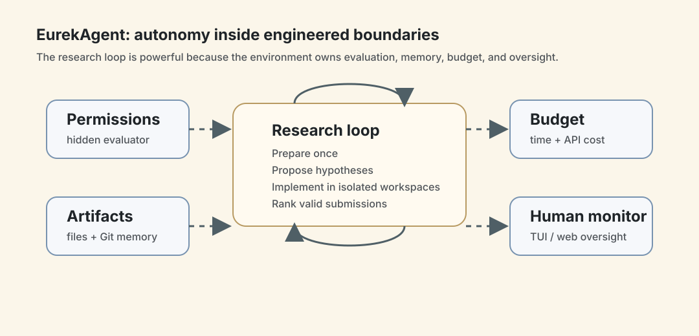
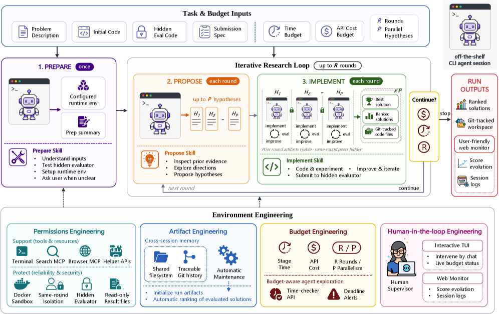
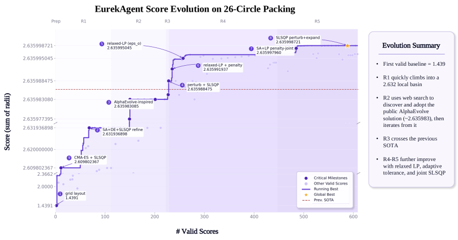
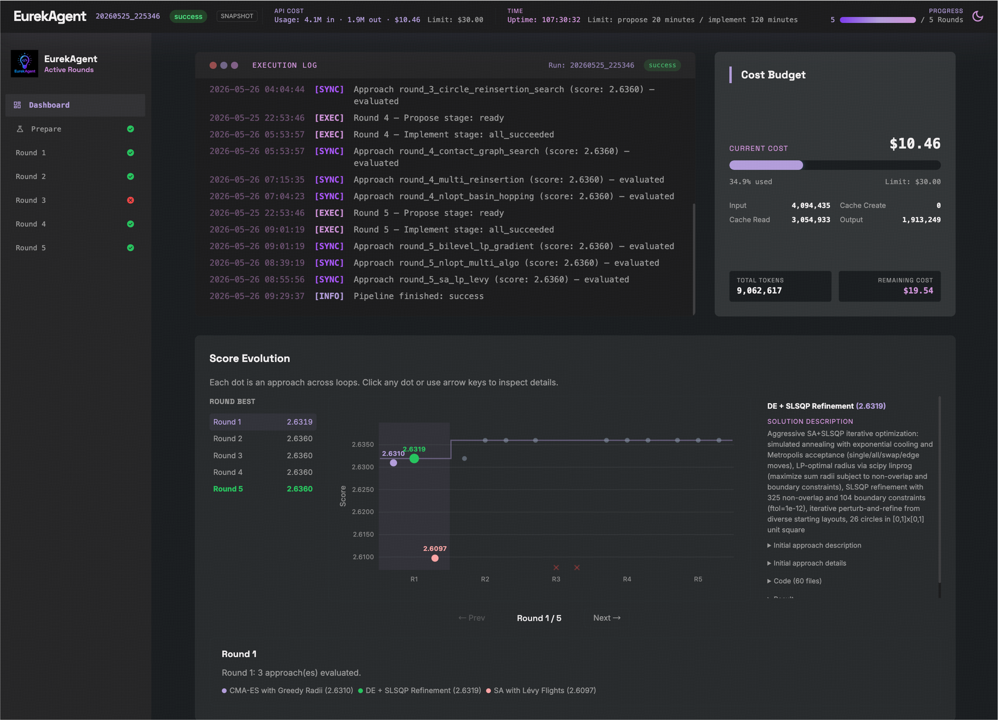

EurekAgent：把 autonomous science 的瓶颈从 workflow 推到 environment
- Paper: EurekAgent: Agent Environment Engineering is All You Need For Autonomous Scientific Discovery
- arXiv: 2606.13662v2, 2026-06-12
- Code: THU-Team-Eureka/EurekAgent
- 机构: Tsinghua University, Renmin University of China
- 类型: autonomous research system / environment engineering / metric-driven discovery
- 关键词: CLI agent, scientific discovery, sandbox, hidden evaluator, artifact memory, budget control, human-in-the-loop
读法：给人和 agent 的路标
这篇先抓一句话：EurekAgent 不想再规定 agent 每一步该怎么想，而是把 agent 放进一个设计好的研究环境，让权限、文件、Git、评测、预算和人类监督共同塑造行为。 如果只想快速 get 到主线，读“一句话判断”、Figure 2、四个 environment engineering 维度和实验总表。
给 agent 以后检索，关键词是：environment engineering、permission engineering、artifact engineering、budget engineering、human-in-the-loop engineering、hidden evaluator、same-round isolation、filesystem and Git memory、prepare propose implement。
一句话判断
EurekAgent 的贡献不是发明新的 reasoning 算法，而是把强 CLI agent 的工作环境工程化：用容器和隐藏评测器保住研究完整性，用文件系统和 Git 存储长期记忆，用预算系统约束探索，用 TUI/Web monitor 保持人类可监督；它在 metric-driven、可执行评测的任务上给出很强结果，但不能被直接外推成“开放式科学发现已经解决”。
图表优先读法
| 先看 | 图/表 | 读完应该抓住什么 |
|---|---|---|
| 1 | Figure 2：system overview | EurekAgent 的核心是 prepare/propose/parallel implement 加环境工程层 |
| 2 | 26-circle score evolution | 它擅长 metric-driven search，而不是任意开放科学发现 |
| 3 | Web monitor / TUI | 人类监督、预算、artifact memory 是系统贡献的一部分 |
| 4 | 实验总表 | 数学、kernel engineering、MLE-Bench 的证据强弱不同，要分开读 |
| 5 | 成本和超参 | 这类系统的收益必须和预算、parallelism、hidden evaluator 一起看 |

这张自制图强调 EurekAgent 的核心不是把 agent workflow 写得更花，而是把 evaluator、权限、artifact、预算和人类监督放在 agent loop 外层。后面看 Figure 2 时，可以把 Prepare/Propose/Implement 读成内部研究循环，把 environment engineering 读成真正控制系统行为边界的外壳。
它到底想改变什么
很多 autonomous research 系统会把创新放在 workflow 上，例如固定的 propose、mutate、select、reflect、debate、self-review。EurekAgent 的判断是：随着 Claude Code、Codex 这类通用 CLI agent 变强，瓶颈会从“给 agent 写更细的流程”转向“给 agent 一个更好的环境”。
这个环境要同时放大和抑制两类 affordance：
- 放大 productive behaviors：开放探索、系统化 artifact 管理、多 agent 协作、可恢复的长任务。
- 抑制 harmful behaviors：reward hacking、evaluator leakage、artifact tampering、不可观测失败、预算失控。
换句话说，EurekAgent 的核心是把 autonomous science 重新写成一个 sandbox 问题：强 agent 可以自由探索，但 evaluator、权限、状态、成本和可审计轨迹必须由外部环境托住。
系统总览：Figure 2 是最重要的图

原文 Figure 2 展示了 EurekAgent 的整体架构：输入任务和预算之后，系统先执行一次 Prepare，再进入多轮 Propose 和并行 Implement。底层 environment engineering layer 提供 secure evaluation、artifact memory、budget control 和 human oversight。
读这张图时，重点看四层：
- Task inputs：problem description、hidden eval code、submission spec、optional initial code、time budget、API cost budget。这里已经说明它适合的是有明确 metric 和 evaluator 的任务。
- Outer loop：Prepare 一次；每一轮 Propose 生成最多 P 个 hypothesis；Implement 阶段把这些 hypothesis 分配给 P 个隔离 workspace 并行做实验。
- Agent autonomy：环境只负责初始化 workspace、切阶段、记录结果、排名、保存状态和 enforce budget；具体研究策略让 CLI agent 自己决定。
- Environment layer：permissions、artifacts、budget、human-in-loop 是一等公民，不是事后补丁。
用文本写就是：
Prepare once
-> for r in 1..R:
Propose up to P hypotheses
Run up to P isolated Implement sessions in parallel
Evaluate submissions through hidden evaluator
Rank valid solutions and update shared history
三个阶段怎么工作
Prepare stage 只执行一次。agent 读 problem description、submission spec、initial code，测试 hidden evaluator 服务，安装或验证依赖。如果环境不清楚或 broken，agent 可以暂停并问人，而不是在错误 setup 上继续优化。最后它写出 preparation summary 和 completion artifact，给后续阶段共享。
Propose stage 是 fan-in。每一轮开始时，proposal session 会读任务输入、准备摘要、上一轮 ranked best solutions，也可以查 previous-round workspaces 和 web search。它输出最多 P 个候选 hypothesis，每个都要足够明确，能直接交给 implement session。
Implement stage 是 fan-out。每个 hypothesis 进入独立 workspace，agent 可以实现、调试、跑 evaluator、迭代修改。所有 candidate solution 通过 secure evaluation service 评分，系统自动记录有效提交、排名、更新 shared history。并行 session 之间同轮隔离，下一轮才能看到上一轮的结果。
这套 loop 的重点不是复杂，而是 artifact-driven。真正传递经验的不是聊天上下文，而是 preparation summary、proposal manifest、hypothesis 文件、solution code、evaluator feedback、scored submissions 和 ranked history。
四个 environment engineering 维度
| 维度 | 具体机制 | 解决什么问题 |
|---|---|---|
| Permissions engineering | Docker run isolation、hidden evaluator outside workspace、secure grading service、controller-owned result files、same-round isolation、GPU helper API default-deny | 防 evaluator 泄露、score tampering、同轮抄答案、GPU 争抢 |
| Artifact engineering | filesystem + Git history、prep summary、proposal manifest、hypotheses、solution code、evaluator feedback、ranked historical solutions、web-search cache | 长期记忆、跨 session 协作、可恢复、可审计 |
| Budget engineering | proposal/implement 分开限时、time-check helper API、deadline warning、API cost tracking、cost limit abort with preserved workspace | 防止时间和 API 成本失控，让中断后可继续 |
| Human-in-the-loop engineering | terminal UI、web monitor、live logs、score evolution、budget status、chat intervention | 保持 agent 自主，但让人随时能看见、介入和纠偏 |
我觉得这张表几乎可以直接当作我们自己 build sandbox 的 checklist：隔离什么、共享什么、记录什么、谁拥有 evaluator、预算怎么停止、失败后怎么恢复、人在什么界面介入。
具体例子：26-circle packing 的演化过程

Figure 1 是 26-circle packing 的 score evolution。这个任务要求在 unit square 里放 26 个不重叠圆，目标是 maximize sum of radii。图里的过程很像一个 agentic research loop：
- First valid baseline = 1.439：系统先找到能通过约束的可行解。
- R1 进入 2.632 local basin：第一轮迅速找到不错但局部的区域。
- R2 通过 web search 发现并采用 public AlphaEvolve solution，约 2.635983：这说明环境允许 agent 使用外部知识，但后续仍需通过 hidden evaluator 验证。
- R3 crossing previous SOTA：第三轮超过 prior best。
- R4 到 R5 继续改进：通过 relaxed LP、adaptive tolerance、joint SLSQP 进一步把结果推到 2.635999。
这张图的价值在于，它不是只给 final score，而是展示了 artifact + web search + evaluator feedback 如何积累成跨轮改进。它也暴露了一个重要假设：如果任务没有可执行 evaluator 或明确 metric，这套 loop 的反馈会弱很多。
实验结果：先看总表
论文在 mathematics、kernel engineering 和 machine learning engineering 三类任务上做实验，统一使用 Claude Code as CLI agent + GLM-5.1 as base LLM。
| 任务 | 方向 | Previous best human | Previous best AI | EurekAgent |
|---|---|---|---|---|
| Circle Packing | ↑ | 约 2.634 | 2.635986 | 2.635999 |
| Erdős Min. Overlap | ↓ | 0.380927 | 0.380876 | 0.380870 |
| 1st Autocorr. Ineq. | ↓ | 1.509730 | 1.502863 | 1.502861 |
| TriMul | ↓ | 2096.04 µs | 2247.78 µs | 2005.03 µs |
| MLE-Bench subset | ↑ | N/A | 71.43% | 85.71% |
这张 Table 1 支撑了论文的 headline claim：在这些 metric-driven tasks 上，environment engineering 足以把 strong CLI agent 的能力转成 SOTA 或接近 SOTA 的结果。
数学任务：training-free 但 evaluator-guided
Table 2 的三个数学任务都报告了比 previous best AI 更好的数值：
| Task | EurekAgent | Base LLM | Prev. Best AI | Previous system LLM |
|---|---|---|---|---|
| Circle Packing | 2.635999 | GLM-5.1 | 2.635986 | R1-Distill-Qwen3-8B |
| Erdős Min. Overlap | 0.380870 | GLM-5.1 | 0.380876 | gpt-oss-120b |
| 1st Autocorr. Ineq. | 1.502861 | GLM-5.1 | 1.502863 | gpt-oss-120b |
论文强调 previous best AI 来自 test-time training systems，而 EurekAgent 是 training-free，只做 environment engineering。这个说法有说服力，但要精确理解：它没有更新 backbone model，但它仍然大量依赖可执行 evaluator、web search、代码实验、跨轮 artifact 和预算内的 trial-and-error。
Kernel engineering：TriMul 的结果更像系统工程证据
TriMul 目标是优化 triangular matrix multiplication，指标是 geometric mean runtime，越低越好。因为官方 GPUMODE leaderboard 已关闭，作者在 A100 上用 TTT-Discover setting 本地 regrade 了 top leaderboard scripts，并用同一 correctness tests、benchmark cases、scoring rule 和 timing logic 对比。
| Rank | Solution | LLM | Median µs ↓ | Mean µs ↓ |
|---|---|---|---|---|
| 1 | EurekAgent-CUDA Graph | GLM-5.1 | 2005.0307 | 2014.1874 |
| 2 | EurekAgent-INT8 BMM | GLM-5.1 | 2006.9998 | 2013.5141 |
| 3 | EurekAgent-Fused Front-End | GLM-5.1 | 2016.5718 | 2020.2674 |
| 4 | EurekAgent-Triton Autotune | GLM-5.1 | 2030.6877 | 2041.5578 |
| 5 | josusamartin | N/A | 2096.0441 | 2105.1655 |
| 6 | TTT-Discover | gpt-oss-120b | 2247.7849 | 2248.2307 |
作者说最优 kernel 相比 strongest regraded leaderboard solution 提升约 4.3%，相比 TTT-Discover 提升约 10.8%。这组结果很有意思，因为它说明环境不只是保存文本思路，还能支持 GPU benchmark、correctness tests、timing protocols 和并行优化。
MLE-Bench subset：结果强，但评估范围要看清
EurekAgent 只评估了 MLE-Bench Lite 的 7 个 selected competitions，不是完整 benchmark。选择方式是从 22 个 Lite competitions 中按难度抽样：2 easy、2 medium、3 hard，覆盖 image、text、audio 和 tabular prediction。
| Agent | LLM | Any Medal | Gold | Above Median |
|---|---|---|---|---|
| EurekAgent | GLM-5.1 | 85.71% | 71.43% | 100.00% |
| AIBuildAI | Claude Opus 4.6 | 71.43% | 57.14% | 85.71% |
| Famou-Agent | Gemini 2.5 Pro | 71.43% | 57.14% | 100.00% |
| Famou-Agent 2.0 | Gemini 2.5 Pro | 71.43% | 65.39% | 95.24% |
| CAIR MARS+ | Gemini 3 Pro Preview | 71.43% | 71.43% | 100.00% |
我的读法是：这说明 environment-engineered iteration 在 ML engineering 上很有潜力，尤其是它用 GLM-5.1 这种 open model 也能跑出强结果。但因为是 selected subset，而且 baseline 有些是 multi-run aggregated score 的 upper end，不能把它直接等同于完整 MLE-Bench 的绝对排名。
成本和超参
论文给了一个很重要的成本信号：使用 Claude Code + GLM-5.1，在三个数学任务上平均 API cost below USD 17，其中 26-circle packing 最低 USD 11。这比很多“自动科学发现”叙事更工程化，因为它至少给了一个可感知的成本量级。
附录 Table 5 给出的关键运行预算如下：
| Task | R rounds | P parallel | propose time | implement time | Notes |
|---|---|---|---|---|---|
| Circle Packing | 5 | 3 | 20 min | 120 min | |
| Erdős Min. Overlap | 8 | 3 | 20 min | 120 min | |
| 1st Autocorr. Ineq. | 8 | 3 | 20 min | 120 min | |
| TriMul | 13 | 3 | 20 min | 160 min | A100 evaluation setting |
| MLE-Bench Lite | 12 | 3 | 20 min | 100 min | one GPU per run |
这张表说明 EurekAgent 不是“短 prompt 出奇迹”。它是多轮、多 session、带 evaluator feedback 的长流程，真正的系统贡献在于让这个长流程不乱、不泄露、不超预算，并且可恢复。
人类监督界面

Figure 3 是 web monitor。它显示 status logs、score evolution、per-round/global best approaches、budget usage，并把完整 session transcripts 组织起来。这个 UI 不是装饰，它解决的是 autonomous research 最现实的问题：长任务跑几个小时以后，人必须能知道它走到哪、花了多少钱、为什么某个方案赢、现在该不该干预。
我觉得这点和我们自己的 paper-reading/wiki pipeline 很像。agent 写笔记不是只要最后的 Markdown，还需要保留 source、图、草稿、构建日志、git diff、失败原因和部署状态。否则一旦中断或结果变差，就没法恢复和复盘。
我怎么判断
可信之处：
- 论文把系统边界讲得比较具体，不只是说“multi-agent collaboration”，而是列出 hidden evaluator、controller-owned files、same-round isolation、GPU helper API、Git history、budget warning 等工程机制。
- 结果覆盖数学优化、GPU kernel 和 ML engineering 三类任务，说明不是单一 toy setting。
- 成本、预算和附录超参给得比较明确，方便判断运行规模。
薄弱之处：
- 核心评估仍集中在 metric-driven tasks with executable evaluators。这类任务适合自动探索，但不代表开放式科学问题也能同样工作。
- TriMul 因为官方 leaderboard 关闭，只能本地 regrade。作者做了同一 protocol，但外部仍需要复现实验来确认。
- MLE-Bench 是 7-task selected subset。这个结果有参考价值，但不能替代完整 benchmark。
- “environment engineering is all you need” 是一个有力标题，但实际系统仍依赖强 CLI agent、GLM-5.1、可执行 evaluator、web search、GPU/容器基础设施和人工可监督界面。
隐含假设：
- 任务必须能被 objective score 驱动，否则 prepare-propose-implement loop 缺少可靠反馈。
- hidden evaluator 必须足够可信，且不被 agent 看到或修改。
- artifacts 必须结构化到 agent 能读懂。只“落盘”不够，文件命名、rank history、score schema、summary 格式都决定了后续 session 能不能复用。
对我的价值
这篇对我最有用的不是某个 SOTA 数字，而是它把 sandbox/agent environment 的部件说清楚了。以后如果我要基于 sandbox build 一个可复制、互相隔离、能跑研究/论文/代码任务的环境，至少需要这些东西：
- 可复制 runtime：Docker 或等价隔离环境、依赖安装脚本、任务级 workspace。
- 隐藏评测接口：agent 只能 submit 和 receive score，不能读 evaluator 或 result owner 文件。
- artifact contract：每个阶段必须产出 summary、manifest、hypothesis、solution、score、log，且路径稳定。
- Git-backed memory：每个 session 的修改和理由进 commit/history，不靠聊天上下文记忆。
- 并行隔离：同轮 P 个 hypothesis 互相不可见，下一轮才能共享 ranked history，避免过早坍缩。
- 预算 API：agent 能知道剩余时间，但 API cost 由系统追踪，到线就 preserve workspace 并停止。
- human monitor：终端和 Web 两套入口，一个看细节，一个看全局状态和 score evolution。
把这套思想迁移到个人 wiki/paper-reading，我会这样理解：wiki 不是一堆 Markdown，而是一个有 source、assets、build、deploy、review、git history 和人类 taste 的 environment。agent 真正能长期帮忙，靠的不是一次性写得多漂亮，而是整个环境允许它持续读、改、验证、恢复和被你纠偏。
建议动作
我会把 EurekAgent 放在 “agent environment / sandbox / autonomous research” 这条线里，作为比普通 agent workflow 更值得参考的系统论文。要借鉴它，先不要照搬完整科学发现系统，而是先做一个最小闭环：任务描述 + 隔离 workspace + hidden evaluator + artifact schema + budget + git history + human monitor。这个闭环跑通之后，再谈并行 hypothesis、web search、GPU helper 和更复杂的 research loop。